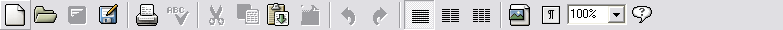
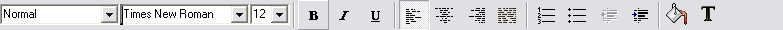
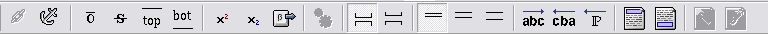
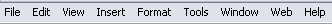

About this Tutorial
This tutorial will use certain conventions when referring to items within AbiWord. It is important to understand what we mean when we refer to buttons, dialogs, menus, and toolbars so that you can take the appropriate action.
- All references to buttons will appear as small-cap, bold, e.g., . When you see a reference to a button, it means that there is an icon on a toolbar that you should select with the mouse.
- References to menu names and choices will appear as bold text, e.g., . Menus are the pull-down items shown along the top of your screen. When you pull a menu down, you see a list of choices (or sub-menus).
- You will also see references to dialog boxes. Dialog boxes will appear italicized, e.g., Print dialog. These windows appear in response to a number of actions, for instance, by pressing the button, or by selecting from the menu.
We encourage you to follow the lessons in this tutorial from beginning to end. If you choose to skip sections, there may be some adjustments you will need to make. For instance, during the section on spellchecking, you are asked to type a document. If you skip this section, later sections which refer to that document will not make sense. You can use an existing document, or you can type a new document.
The term Select can refer to using the mouse button to press a button, choosing a menu item, or highlighting text. Some examples include the following:
- Select the button
In this instance, using the mouse, you would tap once on the associated button and immediately release it.
- Select from the Menu bar
Once again using the mouse, you would pull down the Edit menu to see its contents.
- Select text
In this example, the mouse button is held down while the mouse is moved, selecting a block of text.
Finally, you should familiarize yourself with AbiWord's menus and buttons. There are three toolbars and one menu bar:
- Standard toolbar 
- Formatting toolbar 
- Extra toolbar 
- Menu bar 